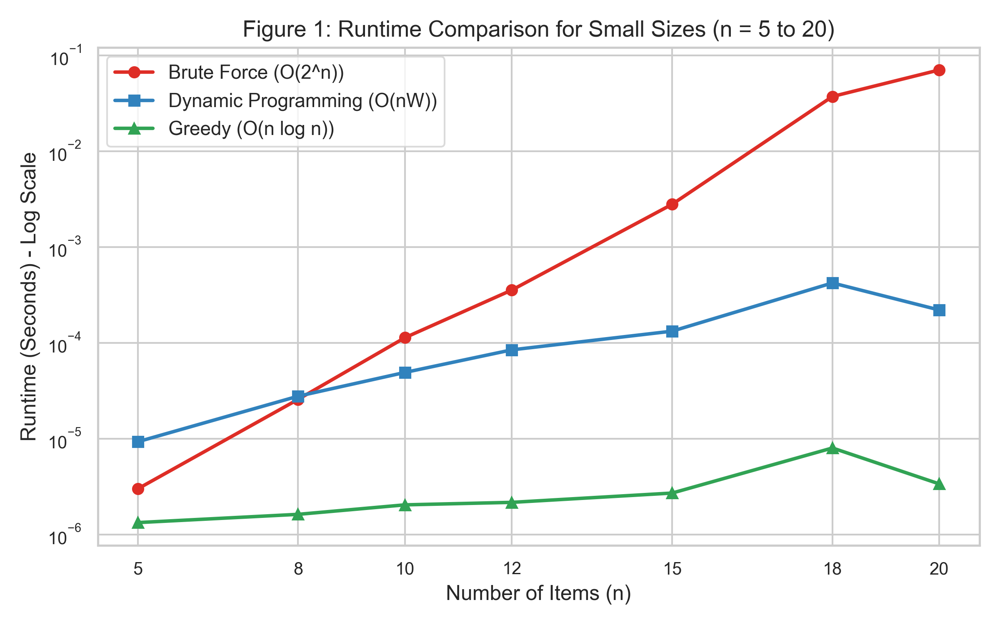
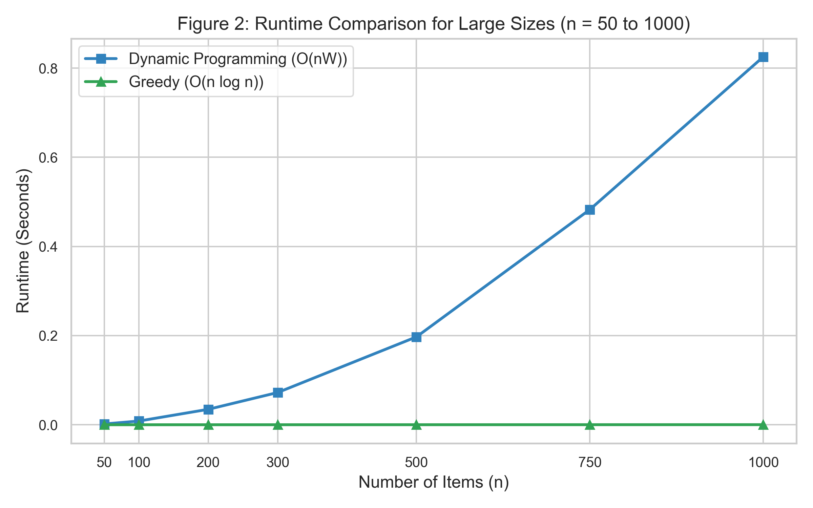
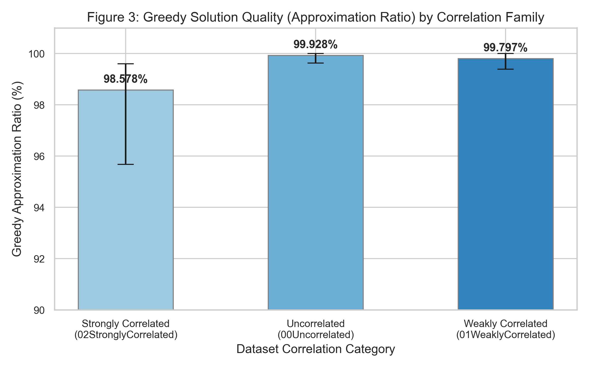

Course: CSE 401 - Design and Analysis of Algorithms • Institution: Institute of Business Administration (IBA), Karachi
The
Knapsack Problem is a classic NP-hard combinatorial optimization problem
with applications in resource allocation, portfolio selection, and
cryptography. The problem is also conceptually linked to practical sales
operations, such as the Traveling Salesperson Problem (TSP); before a
salesperson departs on their tour, they must solve a knapsack problem to
figure out what items or goods to carry, because a salesperson without
their goods is not a good salesperson. This report presents a
comparative empirical analysis of three core algorithms: Brute
Force (Exhaustive Recursion), Dynamic Programming
(Bottom-up Tabulation), and a Greedy Approximation
Heuristic (Value-to-Weight Ratio Sort). We evaluate these
algorithms across synthetic datasets, standard benchmark datasets from
the kplib library, and large-scale hard benchmarks. Our
findings confirm that Brute Force exhibits exponential time growth
,
becoming intractable for
.
Dynamic Programming guarantees optimal solutions in pseudo-polynomial
time
,
but suffers from memory constraints when capacity
.
The Greedy heuristic executes in
time, achieving an average approximation ratio above
on most instances, though its quality degrades to
on strongly correlated datasets where profit is tightly coupled with
weight. We analyze these computational trade-offs to guide algorithmic
selection.
Given items, where each item () has a profit and weight , and a knapsack of capacity , select a subset of items to maximize the total profit without exceeding the capacity . Using binary variables , where if item is selected and otherwise, the problem is formulated as:
def knapsack_brute_force(weights, values, capacity, n=None):
if n is None: n = len(weights)
if n == 0 or capacity == 0: return 0
if weights[n - 1] > capacity: return knapsack_brute_force(weights, values, capacity, n - 1)
return max(knapsack_brute_force(weights, values, capacity, n - 1),
values[n - 1] + knapsack_brute_force(weights, values, capacity - weights[n - 1], n - 1))dp of size
.
The capacity loop runs backwards from
down to
to ensure each item is selected at most once.def knapsack_dp(weights, values, capacity):
dp = [0] * (capacity + 1)
for i in range(len(weights)):
for w in range(capacity, weights[i] - 1, -1):
dp[w] = max(dp[w], values[i] + dp[w - weights[i]])
return dp[capacity]def knapsack_greedy(weights, values, capacity):
order = sorted(range(len(weights)), key=lambda i: values[i] / weights[i], reverse=True)
total, remaining = 0, capacity
for i in order:
if weights[i] <= remaining:
total += values[i]
remaining -= weights[i]
return totalWe evaluate the algorithms across four test beds:
time.perf_counter(). The minimum of 3 runs is
recorded.This set evaluates all three algorithms on identical, deterministic inputs.
Table 1: Small Synthetic Instances (BF vs. DP vs. Greedy)
| Capacity | BF Time | DP Time | Greedy Time | BF Value | DP Value | Greedy Value | Greedy Ratio | |
|---|---|---|---|---|---|---|---|---|
| 5 | 46 | 3.00 us | 9.29 us | 1.33 us | 61 | 61 | 61 | 100.00% |
| 8 | 62 | 25.71 us | 27.75 us | 1.62 us | 302 | 302 | 302 | 100.00% |
| 10 | 84 | 113.25 us | 49.12 us | 2.04 us | 356 | 356 | 333 | 93.54% |
| 12 | 121 | 355.46 us | 84.50 us | 2.17 us | 329 | 329 | 329 | 100.00% |
| 15 | 153 | 2.79 ms | 132.37 us | 2.71 us | 522 | 522 | 520 | 99.62% |
| 18 | 166 | 37.12 ms | 421.46 us | 8.00 us | 577 | 577 | 554 | 96.01% |
| 20 | 174 | 70.30 ms | 220.00 us | 3.37 us | 949 | 949 | 949 | 100.00% |
Brute Force is skipped. Only DP and Greedy are run.
Table 2: Large Synthetic Instances (DP vs. Greedy)
| Capacity | DP Time | Greedy Time | DP Value | Greedy Value | Greedy Ratio | |
|---|---|---|---|---|---|---|
| 50 | 473 | 1.77 ms | 8.00 us | 2,005 | 1,991 | 99.30% |
| 100 | 986 | 8.36 ms | 16.38 us | 3,705 | 3,698 | 99.81% |
| 200 | 2073 | 34.65 ms | 33.88 us | 7,117 | 7,117 | 100.00% |
| 300 | 3070 | 72.32 ms | 51.83 us | 10,602 | 10,599 | 99.97% |
| 500 | 4971 | 197.09 ms | 91.88 us | 18,982 | 18,977 | 99.97% |
| 750 | 7651 | 482.77 ms | 142.50 us | 28,049 | 28,046 | 99.99% |
| 1000 | 10334 | 825.34 ms | 193.25 us | 36,613 | 36,613 | 100.00% |
We evaluate the impact of item correlations on algorithm performance.
Table 3: kplib Benchmarks Grouped by Correlation Family and Size
| Category | Avg DP Time | Avg Greedy Time | Avg Greedy Ratio | Min Greedy Ratio | Max Greedy Ratio | |
|---|---|---|---|---|---|---|
| 00Uncorrelated | 50 | 53.69 ms | 8.14 us | 99.99% | 99.96% | 100.00% |
| 100 | 172.95 ms | 16.88 us | 99.87% | 99.63% | 100.00% | |
| 200 | 783.01 ms | 34.76 us | 99.92% | 99.87% | 99.96% | |
| 01WeaklyCorrelated | 50 | 50.37 ms | 7.89 us | 99.57% | 99.39% | 99.67% |
| 100 | 209.78 ms | 15.76 us | 99.85% | 99.79% | 99.93% | |
| 200 | 779.17 ms | 33.28 us | 99.97% | 99.94% | 100.00% | |
| 02StronglyCorrelated | 50 | 50.38 ms | 8.18 us | 97.24% | 95.68% | 98.12% |
| 100 | 209.93 ms | 15.63 us | 99.18% | 98.88% | 99.34% | |
| 200 | 779.91 ms | 33.92 us | 99.32% | 98.98% | 99.60% |
Evaluating algorithms under massive capacity demands.
Table 4: Jooken Instances Grouped by Size and Capacity
| Capacity | Count | DP Count (Run) | Avg DP Time | Avg Greedy Time | Avg Greedy Ratio (DP cases) | Min Greedy Ratio | |
|---|---|---|---|---|---|---|---|
| 400 | 1,000,000 | 9 | 9 | 27.20 s | 67.62 us | 99.04% | 95.63% |
| 400 | 100,000,000 | 7 | 0 | Skipped (OOM) | 65.92 us | - | - |
| 400 | 10,000,000,000 | 5 | 0 | Skipped (OOM) | 71.64 us | - | - |
| 600 | 1,000,000 | 9 | 9 | 42.28 s | 101.63 us | 99.31% | 96.93% |
| 600 | 100,000,000 | 8 | 0 | Skipped (OOM) | 116.12 us | - | - |
| 600 | 10,000,000,000 | 5 | 0 | Skipped (OOM) | 119.88 us | - | - |
| 800 | 1,000,000 | 7 | 7 | 47.50 s | 138.03 us | 100.00% | 99.99% |
| 800 | 100,000,000 | 5 | 0 | Skipped (OOM) | 147.09 us | - | - |
| 800 | 10,000,000,000 | 10 | 0 | Skipped (OOM) | 148.78 us | - | - |
| 1000 | 1,000,000 | 5 | 5 | 73.78 s | 182.24 us | 99.98% | 99.92% |
| 1000 | 100,000,000 | 1 | 0 | Skipped (OOM) | 181.38 us | - | - |
| 1000 | 10,000,000,000 | 9 | 0 | Skipped (OOM) | 187.52 us | - | - |
| 1200 | 1,000,000 | 7 | 7 | 72.18 s | 216.17 us | 99.15% | 94.19% |
| 1200 | 100,000,000 | 8 | 0 | Skipped (OOM) | 217.59 us | - | - |
| 1200 | 10,000,000,000 | 5 | 0 | Skipped (OOM) | 223.01 us | - | - |
Table 5: Edge Cases Results
| Case Name | Capacity | BF Time | DP Time | Greedy Time | BF Val | DP Val | Greedy Val | Greedy Ratio | |
|---|---|---|---|---|---|---|---|---|---|
n1_cap0 |
1 | 0 | 334.00 ns | 624.98 ns | 834.00 ns | 0 | 0 | 0 | - |
n1_exact |
1 | 5 | 584.03 ns | 540.98 ns | 749.98 ns | 10 | 10 | 10 | 100.00% |
cap_equals_sum |
3 | 18 | 1.75 us | 3.71 us | 1.08 us | 33 | 33 | 33 | 100.00% |
cap_less_than_min |
3 | 4 | 416.01 ns | 542.00 ns | 916.97 ns | 0 | 0 | 0 | - |
greedy_failure_classic |
3 | 50 | 1.50 us | 7.13 us | 917.00 ns | 220 | 220 | 160 | 72.73% |
many_equal_items |
4 | 2 | 2.37 us | 1.33 us | 1.04 us | 2 | 2 | 2 | 100.00% |
greedy_failure_classic
(,
items:
),
Greedy selects ratio-optimal items
and
yielding
,
while the global optimal is items
and
yielding
.
Greedy achieves only
optimization due to item indivisibility.


We evaluated three Knapsack algorithms across synthetic, standard
(kplib), and large-scale hard benchmarks. Our analysis
shows that Brute Force is limited to
,
Dynamic Programming is bound by memory when
,
and Greedy heuristics scale near-instantly but yield sub-optimal results
(-)
depending on dataset correlation. Algorithm selection must balance
constraints between optimality requirements and memory budgets.